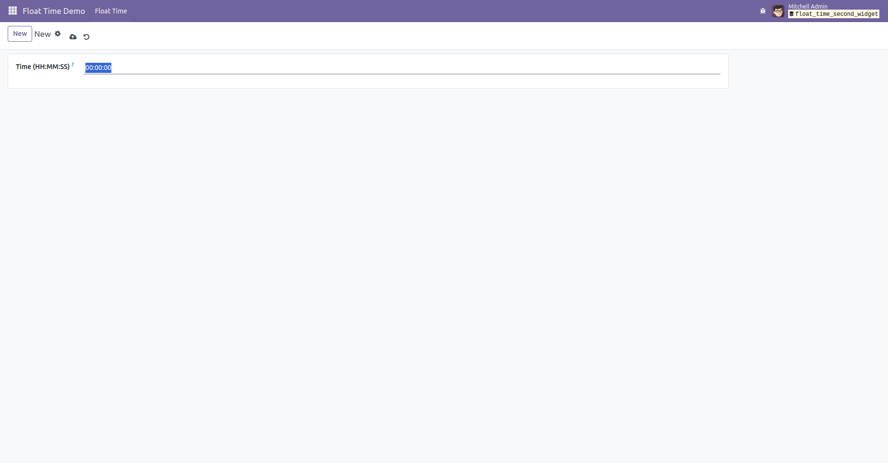

Custom Odoo 20 widget to input and display float fields in HH:MM:SS format
The Float Time Second Widget is a custom field widget for Odoo 20 that allows
users to input and display float time values in HH:MM:SS format. It is designed
to enhance precision in time tracking, useful in attendance, timesheet, or time-based billing applications.
float_time_second.custom addons directory.To use the widget, simply apply it to any float field in your XML view:
<field name="duration" widget="float_time_second"/>Example of the widget in action:

For support, customization, or contributions: dk.odootech@gmail.com